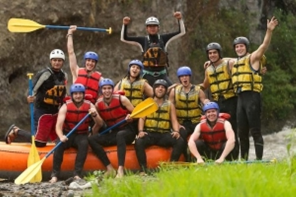

Nossa Missão é Levar pessoas para dentro da natureza com segurança, emoção e respeito. Na Magú Rafting, cada descida é uma chance de se conectar com o rio, com a equipe e com você mesmo. Nossa Visão é Ser a empresa de rafting mais lembrada do Brasil por proporcionar aventuras autênticas, guias apaixonados e um compromisso real com a preservação dos rios. "Onde o rio te chama e a aventura responde."